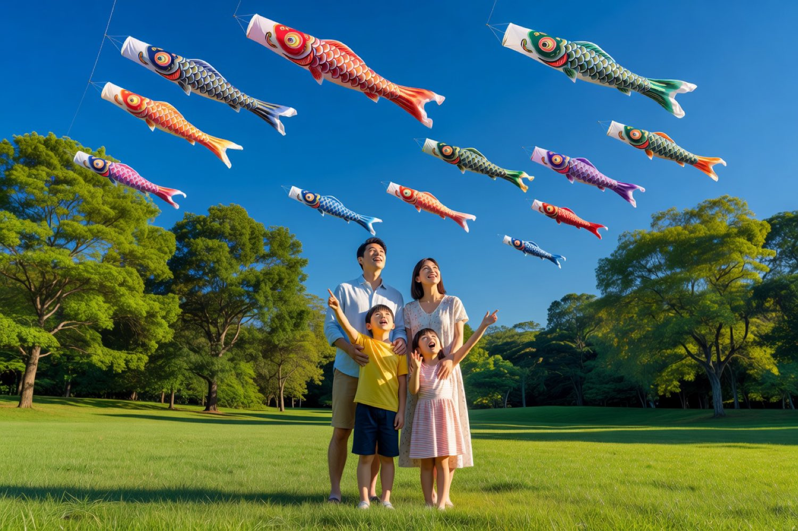
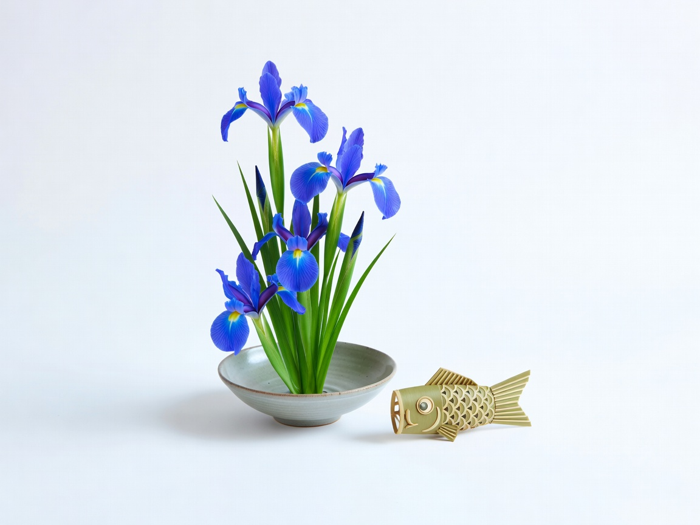

May 5 · 子供の日
Children's Day — the early-summer festival where carp streamers climb into the blue sky and families gather to celebrate the promise of tomorrow.
Kodomo no Hi is the final day of Golden Week in Japan — a public holiday dedicated to celebrating children's happiness and recognizing their individual personalities. What began as a samurai tradition honoring boys has evolved into a day for all children.
Originally called Tango no Sekku (Boy's Festival), the day traces back to Chinese calendar customs brought to Japan during the Nara period. By the Edo period, samurai families displayed armor, helmets, and swords to pray for their sons' health and success.
The carp streamer — koinobori — symbolizes strength and determination. Japanese legend says a carp swimming upstream could transform into a dragon. Families fly black (father), red (mother), and blue (children) carp on poles outside their homes.
Since 1948, when it became a official national holiday, Kodomo no Hi celebrates all children regardless of gender. Families display kintsuna (straw carp) and kabuto (samurai helmets) alongside the colorful streamers.

Each carp carries meaning. The large black nobori — magoi — represents the father: strength and perseverance. The red higoi behind him is the mother: love and devotion. Behind them, smaller blue carp follow — one for each child, with newer families adding green for younger sons.
The streamers fly in a specific order: the dragon head at the top (symbolizing the carp's legendary transformation), followed by the magoi, higoi, and the children's carp below. When the wind catches them, they seem to swim upward — a living sculpture of family aspiration.
From the iron helmet displayed inside to the iris bath in the morning — every detail of Kodomo no Hi connects to wishes for health, strength, and a bright future.
Families display miniature kabuto (samurai helmets) on raised wooden platforms. The tradition comes from samurai who prayed for their sons' warrior spirit. Today it's a wish for courage and resilience — the helmet guards the home just as it once guarded the warrior.
On the morning of May 5, families place shobu (Japanese irises) in the bathwater. The iris's sword-shaped leaves symbolize strength. Floating iris petals — shobu-yu — are believed to ward off illness and bring good health for the year ahead.
Made of nylon or polyester, the carp streamers catch the early-summer breeze and "swim" through the sky. The largest can reach 9 meters. Each one is a visual prayer — for the family's strength, love, and the flourishing of every child.
Public parks across Japan become rivers of color as families set up koinobori together. Community events feature kendo demonstrations, children's parades, and food stalls. It's a day when neighborhoods come alive with early-summer energy.

Two foods define the Kodomo no Hi table — both chosen for their symbolic shapes and early-summer availability.
Bamboo-leaf-wrapped rice bundles shaped like upward-pointing thunderbolts. The shape wards off evil spirits. Inside, sweet red bean paste or savory seasoned rice — both wrapped in the fragrance of fresh spring bamboo.
Sweet rice cakes sandwiched around anko (red bean paste) and wrapped in oak leaves. The oak's property of not dropping its leaves until new ones grow made it a symbol of family continuity — children follow parents, the lineage continues. Each leaf-wrapped packet is a edible wish.
"The carp that succeeds in climbing the waterfall becomes a dragon."
— Japanese proverb, the legend behind koinobori
Open the festival companion for the full schedule, community map, and family registry.
Open Companion